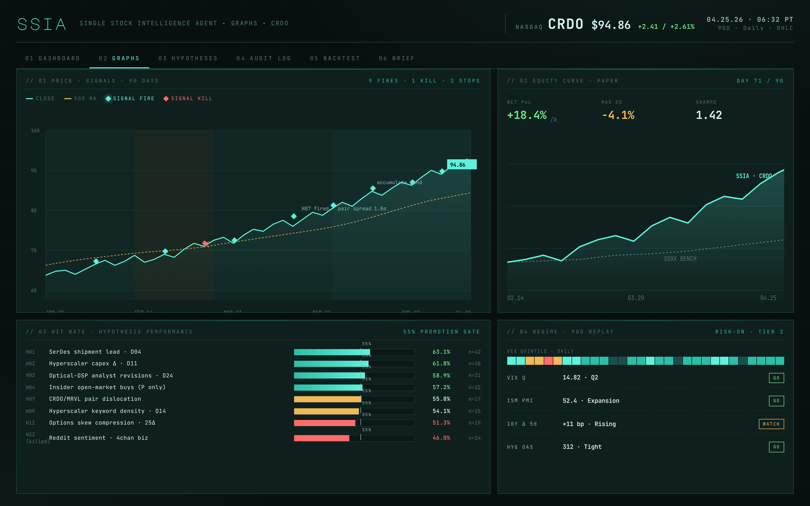

Systems that
work while
you sleep.
Whatever the math will defend in writing.
Not just the ticker. The whole ecosystem around it.
SSIA ingests live WebSocket price feeds for the target and its lead indicators. It pulls structured EDGAR financial data, every Form 4 insider transaction filtered to actual open-market buys, hyperscaler earnings transcripts, analyst revision clusters, IR page diffs, sector news flow, and macro regime indicators. A semantic review layer reads long-form documents the way a junior analyst would, across every cohort ticker, every quarter, in minutes.
Every input becomes a falsifiable hypothesis with a weight, a half-life, and a confidence tier. The composite scorer accounts for volatility regime, macro state, and sector signature, then outputs a single conviction read with direction, sizing, and stop level. Refreshed every cycle during market hours.
The system audits itself nightly. Hypotheses that don't earn their place get pruned. New ones promote as evidence accumulates. The stack on day 90 is not the stack on day 1.
Every morning a written brief lands, synthesized on the prior session, the overnight tape, and the day ahead. A live dashboard exposes the signal stack, composite score, regime vector, recommended position, and risk state. REST endpoints make every read available for downstream integration.
Vertiv and Credo run as independent deployments on the same engine. Each gets its own cohort, its own hypothesis stack, and its own regime model tuned to the sector's volatility signature.



Marketing is a guess until KDP says otherwise.

The platforms that don't earn their slot get cut. The ones that do get fed.
Drafts platform-native content for Reddit, Instagram, Facebook, X, and TikTok. Then waits. Every post holds in an approval queue until a human says yes. Nothing ships on autopilot.
After each cycle, the agent pulls real sales data from the KDP API and scores each channel against the units it drove. No attribution guesswork. The data runs the editorial calendar.
Train it on the famous. Point it at the forgotten.


A 72% high-confidence hit in Harney County, Oregon, on a closed-claim section of the Pueblo Mining District.
Witwatersrand, Carlin, Kalgoorlie, seven more. AuScan learns the spectral and structural signature of the world's most-studied deposits, then applies that synthesis to terrain that's never been scored.
The system doesn't fail. It returns a completeness score. Every result is a deliverable, even if that deliverable is "insufficient data, and here's what's missing."
Does the price of apples tie to gold?

Mall parking. Apple Store foot traffic. A home-team Friday. Apples and gold.
BEEF runs sixty-eight assets (equities, ETFs, metals, crypto) and hunts eight-percent moves inside a two-to-thirty-day window. The interesting part is what it ties them to. Satellite parking-lot density. Box-office openings. Sports outcomes in the city where a company is headquartered. Apple harvest pricing against gold spot. The non-obvious correlations that move money before the headline catches up.
Hypotheses are generated cheap, briefed by the premium model, and graded across four conviction cuts. Wagyu, Filet, T-Bone, Burger. Wagyu is rare on purpose. The menu changes every morning.
Posting is the job. Selling is the point.

Promotion that reports back.
Watches what the data does (saves, follows, paid streams, link-clicks) and reroutes the next cycle to whatever earned its keep. The channels that convert get more. The ones that don't get cut.
Built for artists who want the machine to do the daily work. Platform-native drafts, human approval gate, DSP-level attribution. The release cadence becomes a system, not a scramble.